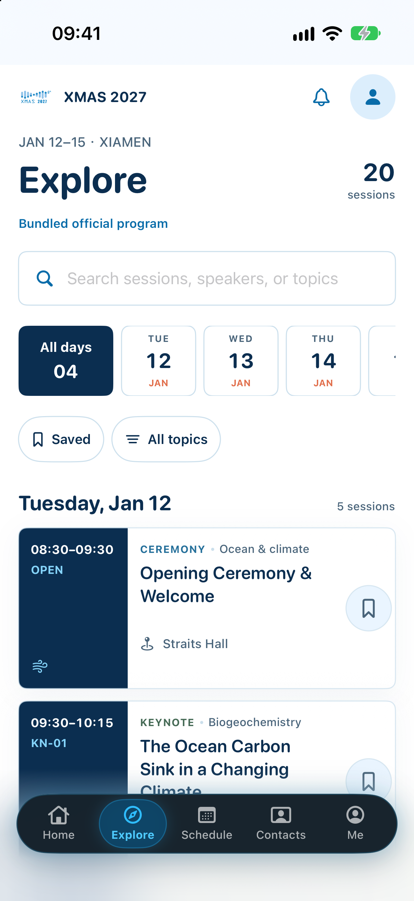

现场参会
几百上千人挤在会场，Wi-Fi 一定崩。议程、会场、报告人全部离线，打开就能查下一场在哪。
几百上千人挤在会场，Wi-Fi 一定崩。议程、会场、报告人全部离线，打开就能查下一场在哪。
线下议程 + 线上直播入口，同一份时间表。远端参会者不会因为时差错过关键场次。
几千份摘要、几百张海报，按主题、编号、报告人检索。站在海报墙前也能三秒找到那张。
第八届厦门海洋环境科学论坛的官方会议助手。整场大会的议程、报告人、会场信息全部离线可用，参会者不需要账号，也不会被追踪。
这是「一场会议一个 App」的标准做法：主办方提供议程数据，我们负责建模、定制品牌、多端构建和上线。




XMAS-MEL 2027 就是现成的例子。iPhone 走 TestFlight，Android 直接装 APK。
iPhone 和 iPad。先装 TestFlight，再点公测链接。
去 TestFlight Android当前 1.1.6，通过蒲公英分发。下载后在手机上允许安装未知来源。
下载 APK HarmonyOS按会议需求构建 HarmonyOS 版本，需要的话写信索取。
联系我们测试版本，议程内容以大会官方为准。TestFlight 名额满后链接会失效，APK 链接长期有效。
议程表格、摘要、报告人信息、会场平面图。什么格式都行，Excel 和 Word 最常见。
会议 logo、主色、名称。参会者看到的是「你们会议的 App」，不是我们的。
iOS、Android、HarmonyOS 同步出包。App Store / 应用市场 / 二维码分发，按需选。
会前更新议程、会中修数据、会后归档。会议当天有人盯。
不需要。App 没有账号系统，装完即用。这对国际会议尤其重要——注册门槛每多一步，装机率就掉一截。
不影响。议程、摘要、报告人、会场信息都在安装包里，离线可完成全部核心操作。
会前通过版本更新同步；会中可以紧急修数据重新出包，也可以用配置下发做小范围修正。
取决于议程规模和定制程度。一场几百场报告的会议，从拿到完整数据到上线通常按周计，具体看排期。
参会者侧无账号、无追踪。主办方侧的摘要和报告人信息按约定范围使用，不做二次分发。